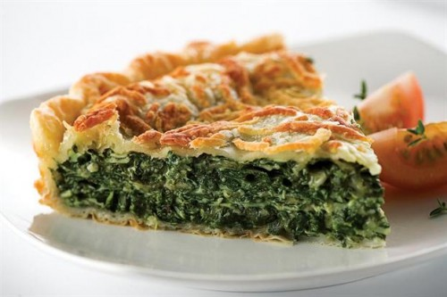

Tarta de acelga y atún

Riquísima tarta y fácil de hacer.
Ingredientes
- Disco de tarta.
- Acelga (o espinaca).
- Atún.
- Huevos.
- Cebollas.
- Aceite.
- Sal.
- Pimienta.
- Queso (opcional).
Pasos
- Picar cebolla y saltear en la sartén con aceite.
- Añadir poco a poco la acelga o la espinaca hasta que se ablanden y se integren con la cebolla.
- Esperar a que se enfríe un poco y añadir atún.
- Salpimentar.
- Poner disco de tarta en una fuente y añadir lo que hicimos anteriormente.
- Añadir huevos en distintos puntos de la tarta.
- Si te gusta, podés ponerle queso también.
- Cerrar la tarta con el otro disco y pinchar un poco la masa para que no se infle (cuidado con no pinchar los huevos).
- Poner en el horno unos 15 a 20 minutos (hasta que la masa se dore).